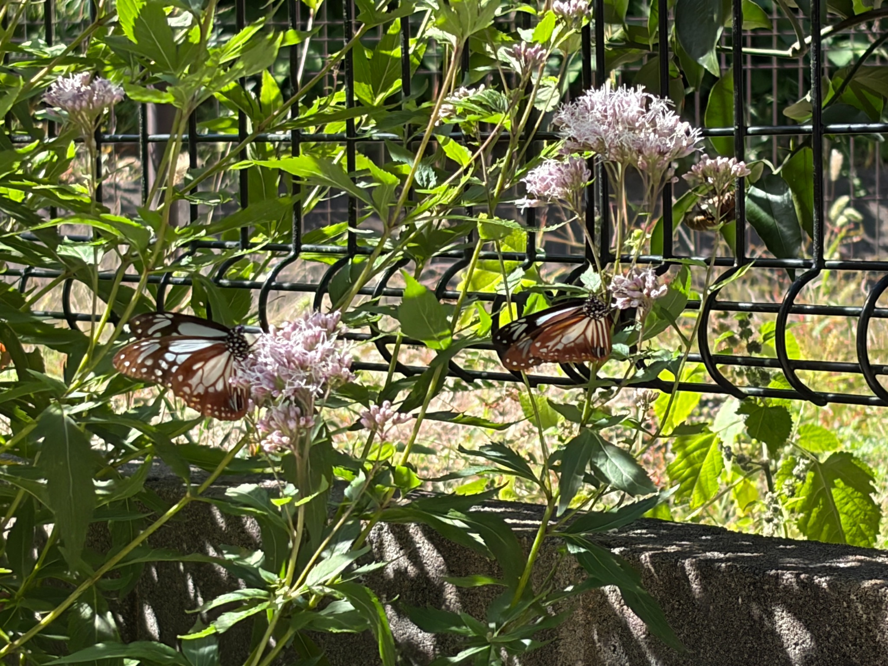
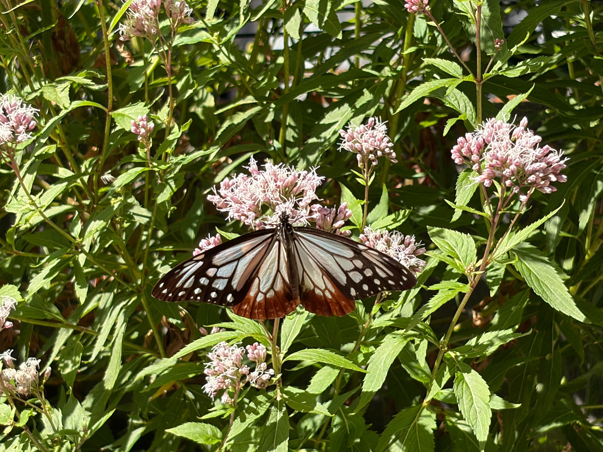
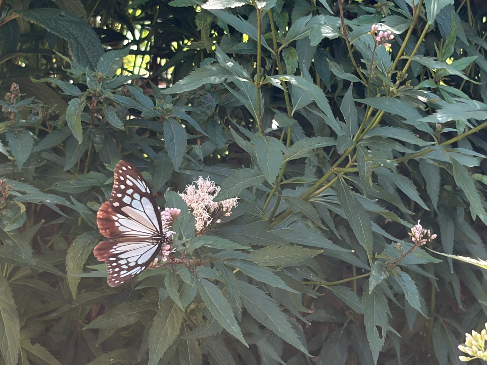
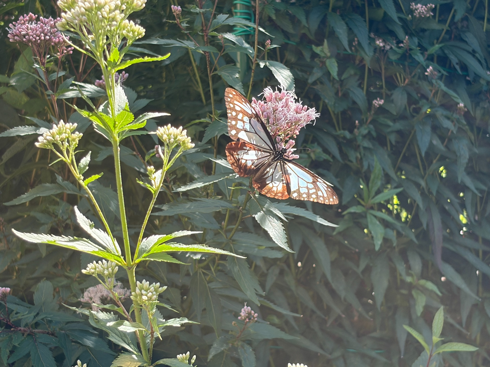
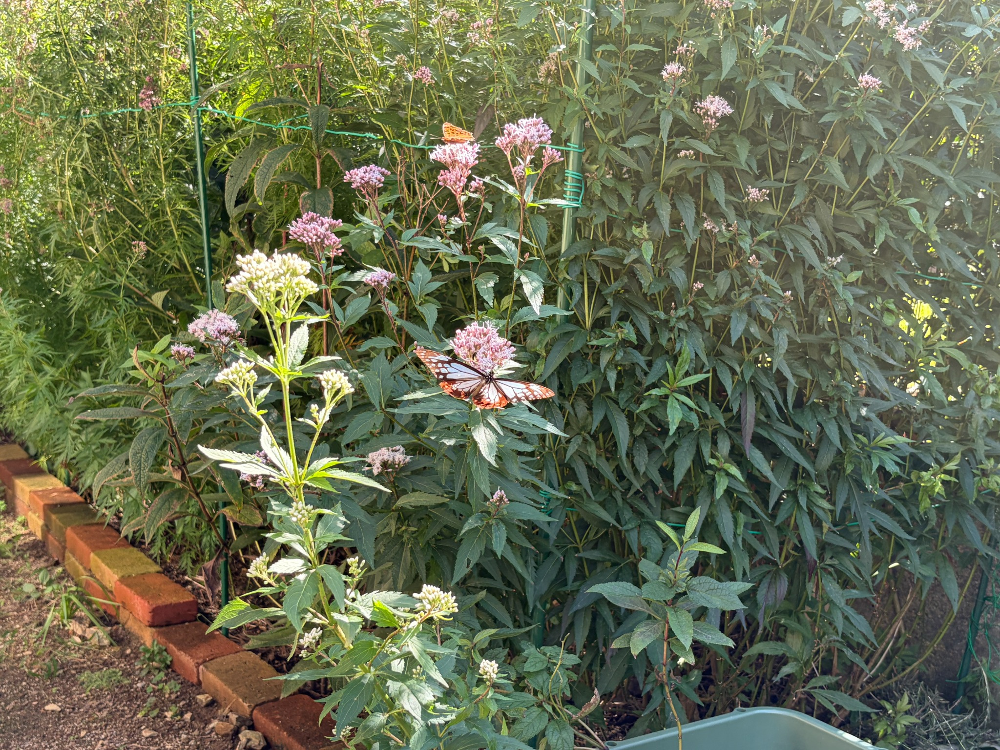
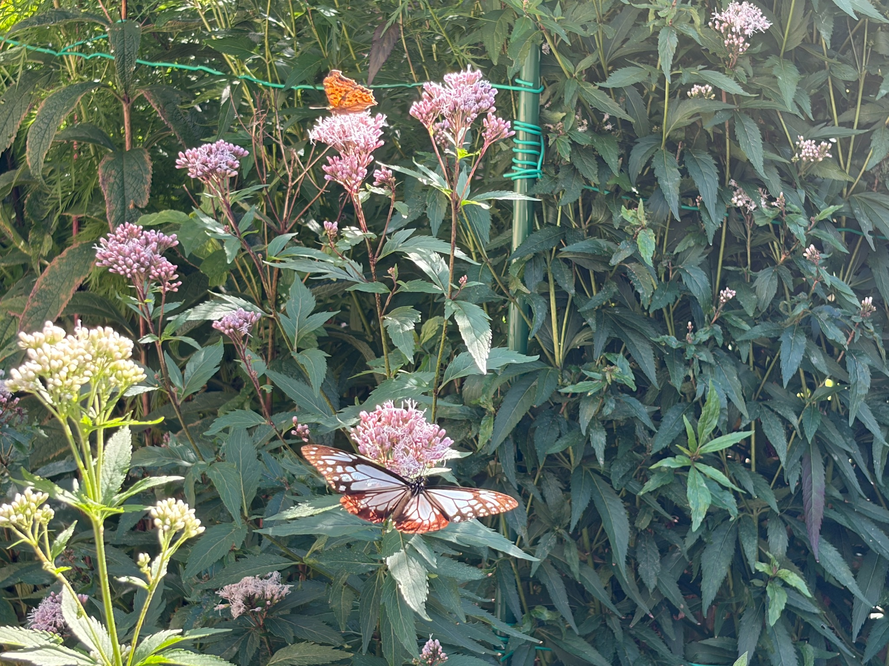
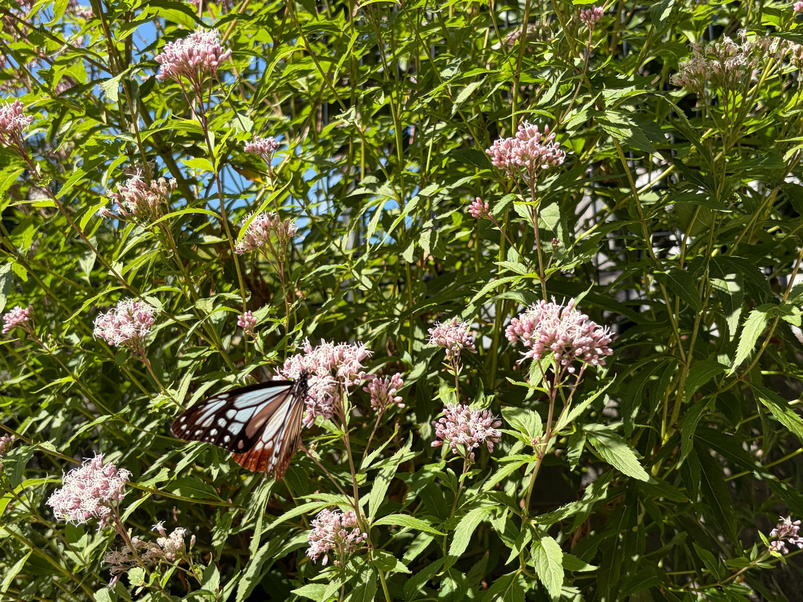
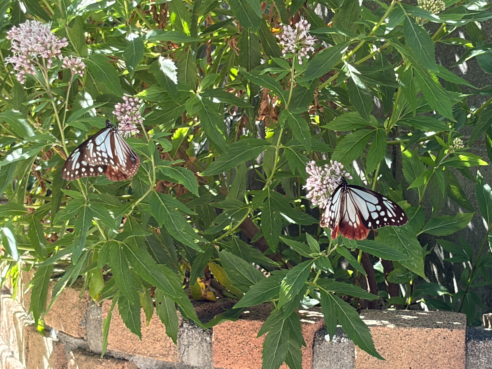
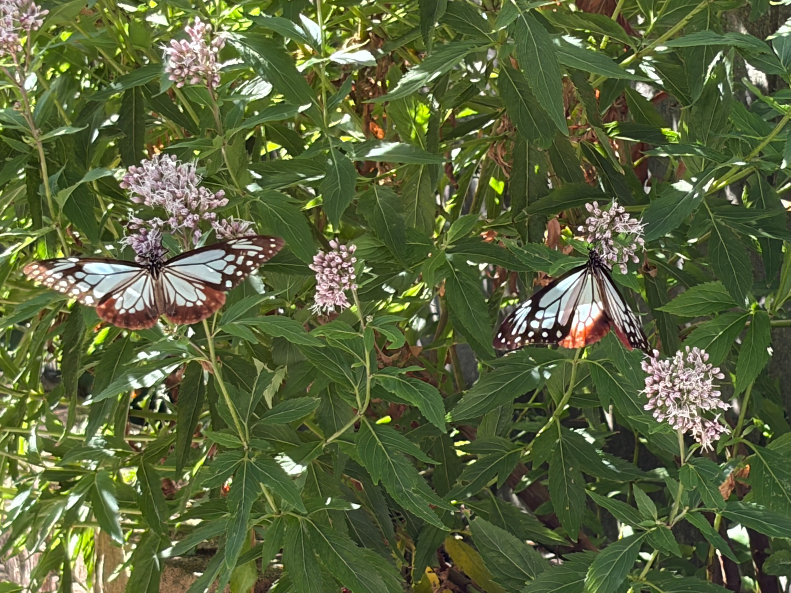
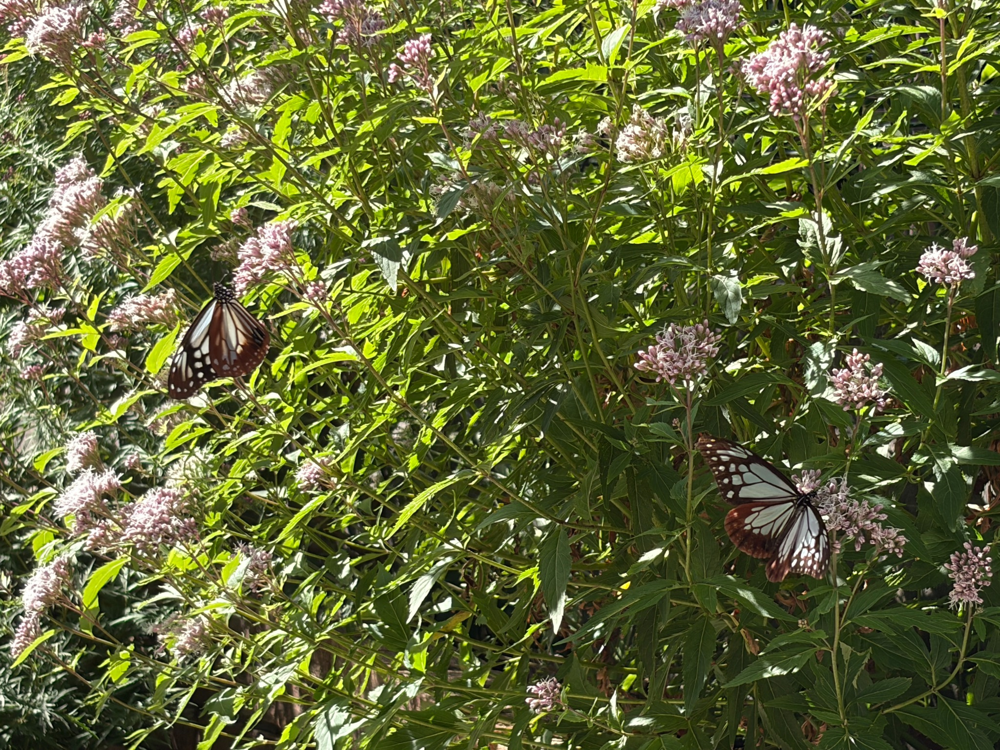

9：30から14：30にかけて、庭で2匹を確認
10月17日は、9：30から14：30にかけて庭の様子を確認し、2匹のアサギマダラを観察しました。
花房にそれぞれがとまり、並ぶように蜜を吸う場面もありました。2匹が一緒に写る写真を何枚も撮ることができ、庭の花を訪れてくれた様子を、写真11枚と動画1本に残しました。
翅を大きく広げた姿もあれば、閉じ気味にして花につかまっている姿もあります。光を受けると浅葱色の部分が明るく透け、濃い翅脈や茶色い縁取りがはっきりと浮かび上がります。近くで見るたびに、きれいな蝶だと感じます。
写真に写っている範囲では、目立つ大きな翅の欠けは見当たりませんでした。ただ、これまで庭に来ていた個体と同じなのか、新しく立ち寄った個体なのかまでは分かりません。


白フジバカマ原種系は満開。3種類で開花の進み方に違い
この日の庭では、アサギマダラのために育てている花が、それぞれ違う段階まで咲き進んでいました。
私が見た開花の目安は、次のとおりです。
- 白フジバカマ原種系：100％、満開状態
- フジバカマ原種系：約80％が開花
- 羽衣：約50％が開花
これは花を一つずつ数えた割合ではなく、株全体を見た私の目安です。
白フジバカマ原種系は、すっかり咲きそろった状態です。一方、フジバカマ原種系は花が十分に開きながらも、まだ蕾が残っています。羽衣は約半分が開花し、これから咲く花も楽しめる段階でした。
同じ庭に植えていても、種類によって咲き進む速さが違います。今回は、その違いとアサギマダラが吸蜜する場所を、あわせて見ることができました。
今回の吸蜜は、フジバカマ原種系が約90％
この日、特に印象に残ったのは、アサギマダラが吸蜜する花の偏りです。
私が観察していた範囲では、吸蜜の約90％がフジバカマ原種系でした。
こちらも時間を計測した数値ではなく、見ていた間の印象による割合です。それでも、今回はフジバカマ原種系で蜜を吸っている姿が多く、はっきりとした偏りを感じました。
10月12日は、白フジバカマ原種系への吸蜜が9割以上という印象でした。それが17日は、フジバカマ原種系に約9割。観察した日によって、よく利用する花が変わっているところが興味深いです。
白フジバカマ原種系も満開なのに、今回は約8割が開花したフジバカマ原種系がよく利用されていました。「花がたくさん咲いていること」だけでは説明しきれないのかもしれません。



満開になる少し前が、よいタイミングなのだろうか
今回の様子を見て、私なりに感じたことがあります。
満開になる少し前の状態が、アサギマダラを特に呼び寄せやすいのではないか。
まだ私のイメージですが、花が次々と開き、咲いている花とこれから開く蕾が混じっている時期に、よく集まっているような気がします。
17日は、約8割が開花したフジバカマ原種系に吸蜜が集中しました。庭の中に開花段階の違う花があることで、アサギマダラがどこを利用するのか、比べて観察できるようになってきました。
「満開手前がいちばん蜜が多い」とまでは言い切れませんが、アサギマダラの吸蜜が満開手前の花なのは確かです。
今回確認できたのは、庭を訪れた後に、どの花で多く吸蜜していたかということです。満開手前の花が庭への飛来そのものを呼び寄せたのかまでは、この観察だけでは分かりませんが、少なくともこの日は、満開の白フジバカマ原種系よりも、満開手前のフジバカマ原種系がよく利用されていました。
また、花の種類と開花段階が同時に違うため、今回の偏りが種類の違いによるものなのか、咲き進み方によるものなのかは、今後も見ていきたいところです。
咲いている花の量や日当たり、その日の天候、訪れた個体の違いなども関係するのかもしれません。
12日と17日で吸蜜する花の偏りが変わったことは、これから観察を続けるうえで、覚えておきたい点です。
ミドリヒョウモンも4匹ほど一緒に吸蜜
この日は、アサギマダラだけでなく、ミドリヒョウモンも4匹ほどが一緒に吸蜜していました。
アサギマダラと、オレンジ色のミドリヒョウモンが同じ画面に写っている写真もあります。それぞれ別の花房にとまり、庭の花を利用していました。
私が見ていた間、ミドリヒョウモンが一緒にいても、アサギマダラの吸蜜に影響は見られませんでした。
種類の違う蝶が同じ場所を訪れ、それぞれに蜜を吸っている光景を見ると、花を育ててきてよかったと感じます。


ミツバチやアブ、小さなハナムグリも約50匹
花の周りは、小さな昆虫たちでもにぎわっていました。
ミツバチ、アブ、小さなハナムグリなどが、合わせて50匹くらい。花で蜜を吸ったり、花の間を飛び回ったりしていました。
こちらも正確に数えた頭数ではありませんが、庭のあちこちで昆虫が動いており、多くの虫が花を訪れていることを実感しました。
アサギマダラを呼びたいと思って育てている花ですが、実際にはさまざまな昆虫が利用しています。蝶だけを見ていたときには気づかなかった庭のにぎわいも、観察する楽しみの一つになっています。
今後は、こうした小さな昆虫が多い日と少ない日で、アサギマダラの吸蜜の様子に違いがあるのかも、気に留めて見ていきたいと思います。
写真で残せた、2匹が並ぶ庭の風景
今回の写真では、2匹のアサギマダラが同時に花にとまっている場面を、いくつも残すことができました。
近くから撮った写真では翅の模様がよく分かり、少し離れた写真では、花房の広がりや周囲の蕾、庭の中で蝶がいる位置も分かります。
1匹ずつの姿だけでなく、2匹が別々の花房を利用している様子を残せたのがうれしいです。同じ花壇の中で、それぞれが花にとまっている姿は、何度見ても見飽きません。
写真だけでは花から花への移動の順序や滞在時間までは分かりませんが、この日の庭で見られた場面を振り返る、大切な記録になりました。




これからも、開花状況と吸蜜する花を一緒に記録したい
10月17日は、9：30から14：30にかけて庭を確認しました。白フジバカマ原種系が満開、フジバカマ原種系が約8割、羽衣が約5割の開花で、その中でもアサギマダラの吸蜜はフジバカマ原種系に約9割が集中しました。
今回の観察で、花の開花状況と、アサギマダラがよく利用する花を一緒に記録しておくことの面白さを感じました。
これからフジバカマ原種系が満開になり、羽衣もさらに咲き進んだときに、吸蜜する場所は変わるのでしょうか。白フジバカマ原種系を再びよく利用することもあるのか、気になります。
「満開になる少し前が、特によいのではないか」という今回の印象も、これからの観察で確かめていきたいです。
一日の様子だけで決めつけず、花の咲き方と蝶の姿を少しずつ記録しながら、わが家の庭での傾向を見つけていこうと思います。
動画｜花房にとまるアサギマダラ
写真に加えて、約8秒の短い動画も撮影しました。
花房にとまったアサギマダラが、翅を閉じ気味にしたり、少し開いたりする様子を残しています。動画で明瞭に写っているのは1匹で、花にとまる姿を中心に撮影した記録です。